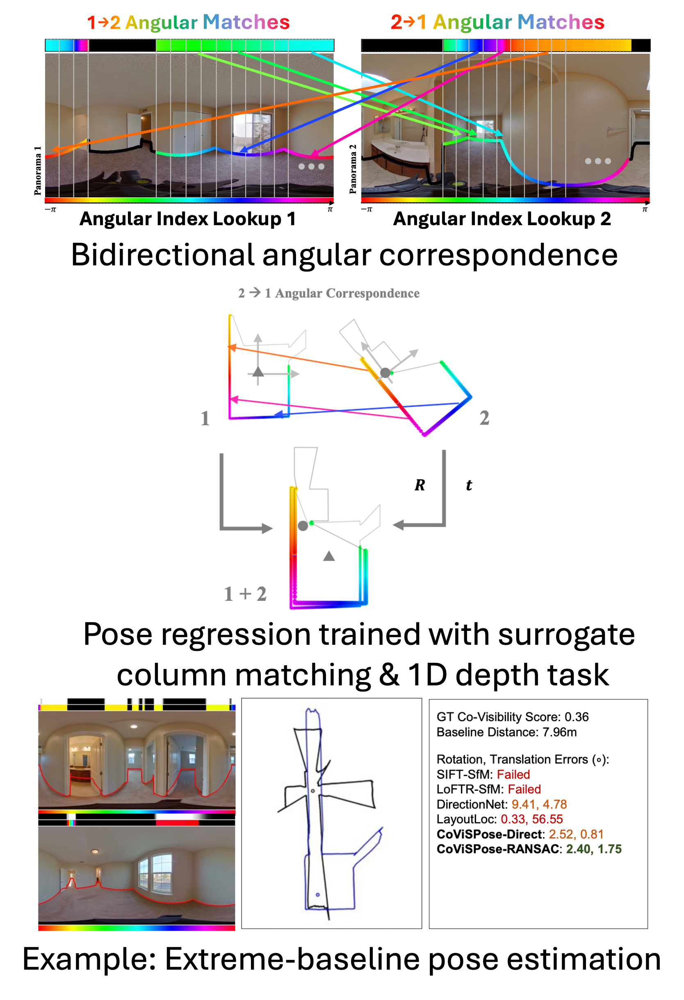
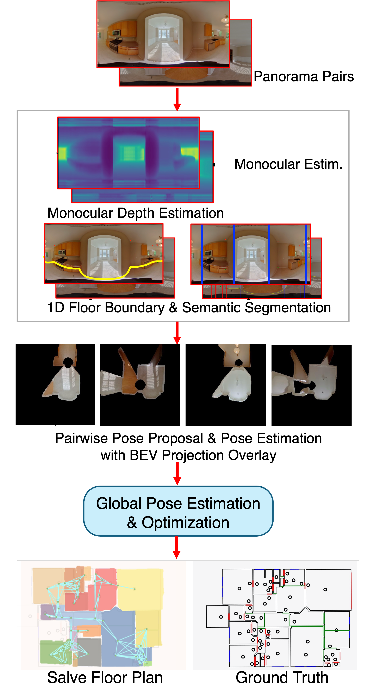
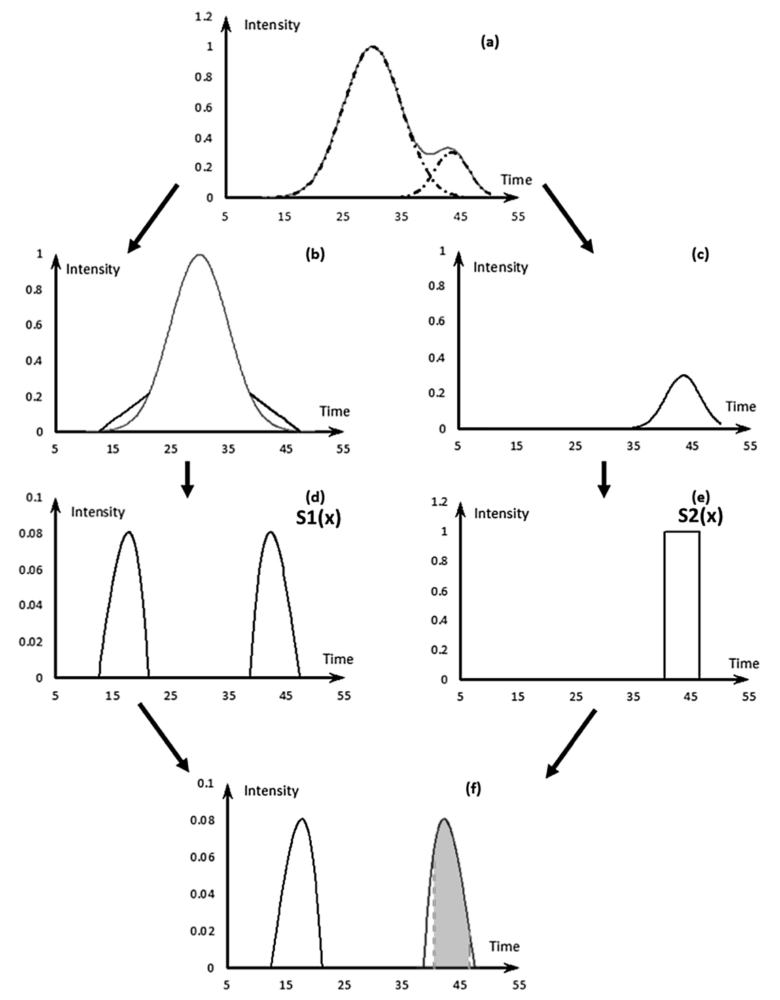

Yuguang Li (李宇光)
I am a computer vision researcher working on image-grounded 3D understanding: recovering camera pose, geometry, layout, and scene structure from sparse, noisy, unposed images. I did my PhD research in GRAIL Lab at UW Allen School, with collaborations across UW and industry, including Alex Colburn, Sing Bing Kang and Ranjay Krishna with broader collaborations spanning Zillow and other industry research groups. My research interests span multi-view perception, geometric reconstruction, geometric foundational modelss, generative models, optimization, graphics, and compact 3D scene representations. I am especially interested in systems that reconstruct the physical world from minimal visual evidence: accurate where images provide strong constraints, and plausible where observations are missing, occluded, or noisy. My recent work focuses on autonomous multi-view floor-plan reconstruction. BADGR combines layout-pose bundle adjustment with a floor-plan-specific diffusion model for learned outlier rejection and layout inpainting. MvFFN/MOIS reformulates floor-plan recovery as pixel-grounded wall-instance and connectivity reasoning from sparse, unposed, wide-baseline panoramas. This research started from Zillow’s floor-plan reconstruction platform I originated and led to build, with a consistent mission: recover accurate camera poses, geometry, and structured floor plans from sparse indoor imagery. We shared our dataset and initial details publically with Zillow Indoor Dataset paper; PSM-Net extended the direction to BEV-based multi-view layout estimation; SALVe grew from intern-led work that I mentored from problem framing through technical direction; and CoVisPose advanced the same wide-baseline pose-estimation agenda before I later productized it as a production localization system.Academic Papers

MvFFN: Multi-view Floor-plan Feed-Forward Network for Unposed Wide-Baseline Panorama Layout Reconstruction
NeurIPS 2026 Submission
Yuguang Li, Yichuan Deng, Zixuan Liu, Ivaylo Boyadzhiev, Simon Zou, Linda Shapiro, Alex Colburn.
| [Code]
Abstract: Automatically reconstructing accurate camera poses and floor-plan layouts from sparse, unposed, wide-baseline RGB panoramas remains a difficult and unsolved problem. Direct prediction of multi-room floor plans is much harder to learn in our sparse panorama setting, with ambiguous room partitions, incomplete observations, and noisy cross-view supervision. We address this with Multi-view Ordered Wall Instance Segmentation (MOIS), a new formulation that replaces direct global wall-sequence prediction with local cross-view wall instances and within-room wall connectivity. Under this formulation, we introduce MvFFN, a feed-forward multi-view transformer that jointly predicts coarse camera poses, dense global geometry, and wall-instance-level semantic outputs with globally consistent identities and local connectivity. A downstream Layout Chaining (LC) pipeline assembles these predictions into globally consistent multi-room floor layouts, significantly outperforming prior methods on wall- and junction-level accuracy. The resulting wall instances also enable downstream layout bundle adjustment, reducing mean wall distance from 14.1 cm to 12.3 cm on scenes that benefit from optimization, with improved layout accuracy in 68\% of scenes. Finally, we introduce ZInD-CrossView and Structure3D-CrossView, two re-annotated datasets with globally unique wall instances and cross-view segmentation labels for this task. ... See More
NeurIPS 2026 Submission
Yuguang Li, Yichuan Deng, Zixuan Liu, Ivaylo Boyadzhiev, Simon Zou, Linda Shapiro, Alex Colburn.
| [Code]
Abstract: Automatically reconstructing accurate camera poses and floor-plan layouts from sparse, unposed, wide-baseline RGB panoramas remains a difficult and unsolved problem. Direct prediction of multi-room floor plans is much harder to learn in our sparse panorama setting, with ambiguous room partitions, incomplete observations, and noisy cross-view supervision. We address this with Multi-view Ordered Wall Instance Segmentation (MOIS), a new formulation that replaces direct global wall-sequence prediction with local cross-view wall instances and within-room wall connectivity. Under this formulation, we introduce MvFFN, a feed-forward multi-view transformer that jointly predicts coarse camera poses, dense global geometry, and wall-instance-level semantic outputs with globally consistent identities and local connectivity. A downstream Layout Chaining (LC) pipeline assembles these predictions into globally consistent multi-room floor layouts, significantly outperforming prior methods on wall- and junction-level accuracy. The resulting wall instances also enable downstream layout bundle adjustment, reducing mean wall distance from 14.1 cm to 12.3 cm on scenes that benefit from optimization, with improved layout accuracy in 68\% of scenes. Finally, we introduce ZInD-CrossView and Structure3D-CrossView, two re-annotated datasets with globally unique wall instances and cross-view segmentation labels for this task. ... See More

BADGR: Bundle Adjustment Diffusion Conditioned by GRadients for Wide-Baseline Floor Plan Reconstruction
Conference on Computer Vision and Pattern Recognition (CVPR) 2025 Highlight (top 13%)
Yuguang Li, Ivaylo Boyadzhiev, Zixuan Liu, Linda Shapiro, Alex Colburn.
[Project] [Paper] | [Code]
Abstract: Reconstructing precise camera poses and floor plan layouts from a set of wide-baseline RGB panoramas is a difficult and unsolved problem. We present BADGR, a novel diffusion model which performs both reconstruction and bundle adjustment (BA) optimization tasks, to refine camera poses and layouts from a given coarse state using 1D floor boundary information from dozens of images of varying input densities. Unlike a guided diffusion model, BADGR is conditioned on dense per-feature outputs from a single-step Levenberg Marquardt (LM) optimizer and is trained to predict camera and wall positions while minimizing reprojection errors for view-consistency. The objective of layout generation from denoising diffusion process complements BA optimization by providing additional learned layout-structural constraints on top of the co-visible features across images. These constraints help BADGR to make plausible guesses on spatial relations which help constrain pose graph, such as wall adjacency, collinearity, and learn to mitigate errors from dense boundary observations with global contexts. BADGR trains exclusively on 2D floor plans, simplifying data acquisition, enabling robust augmentation, and supporting variety of input densities. Our experiments and analysis validate our method, which significantly outperforms the state-of-the-art pose and floor plan layouts reconstruction with different input densities. ... See More
Conference on Computer Vision and Pattern Recognition (CVPR) 2025 Highlight (top 13%)
Yuguang Li, Ivaylo Boyadzhiev, Zixuan Liu, Linda Shapiro, Alex Colburn.
[Project] [Paper] | [Code]
Abstract: Reconstructing precise camera poses and floor plan layouts from a set of wide-baseline RGB panoramas is a difficult and unsolved problem. We present BADGR, a novel diffusion model which performs both reconstruction and bundle adjustment (BA) optimization tasks, to refine camera poses and layouts from a given coarse state using 1D floor boundary information from dozens of images of varying input densities. Unlike a guided diffusion model, BADGR is conditioned on dense per-feature outputs from a single-step Levenberg Marquardt (LM) optimizer and is trained to predict camera and wall positions while minimizing reprojection errors for view-consistency. The objective of layout generation from denoising diffusion process complements BA optimization by providing additional learned layout-structural constraints on top of the co-visible features across images. These constraints help BADGR to make plausible guesses on spatial relations which help constrain pose graph, such as wall adjacency, collinearity, and learn to mitigate errors from dense boundary observations with global contexts. BADGR trains exclusively on 2D floor plans, simplifying data acquisition, enabling robust augmentation, and supporting variety of input densities. Our experiments and analysis validate our method, which significantly outperforms the state-of-the-art pose and floor plan layouts reconstruction with different input densities. ... See More

CoVisPose: Co-Visibility Pose Transformer for Wide-Baseline Relative Pose Estimation in 360 Indoor Panoramas
European Conference on Computer Vision ECCV 2022
Will Hutchcroft, Yuguang Li, Ivaylo Boyadzhiev, Zhiqiang Wan, Haiyan Wang, Sing Bing Kang.
[Main Paper] [Supplementary] | [Code]
Abstract: We present CoVisPose,an end-to-end supervised learning method for relative camera pose estimation in wide baseline 360 indoor panoramas. To address the challenges of occlusion, perspective changes, and textureless or repetitive regions, we generate rich representations for direct pose regression by jointly learning dense bidirectional visual overlap, correspondence, and layout geometry. We estimate three image column-wise quantities: co-visibility (the probability that a given column’s image content is seen in the other panorama), angular correspondence (angular matching of columns across panoramas), and floor layout (the vertical floor-wall boundary angle). We learn these dense outputs by applying a transformer over the image-column feature sequences, which cover the full 360 field-of-view (FoV) from both panoramas.The result an rich representation supports learning robust relative poses with an efficient 1D convolutional decoder. In addition to learned direct pose regression with scale,our network also supports pose estimation through a RANSAC- based rigid registration of the predicted corresponding layout boundary points. Our method is robust to extremely wide baselines with very low visual overlap, as well as significant occlusions. We improve upon the SOTA by a large margin, as demonstrated on a large-scale dataset of real homes, ZInD. ... See More
European Conference on Computer Vision ECCV 2022
Will Hutchcroft, Yuguang Li, Ivaylo Boyadzhiev, Zhiqiang Wan, Haiyan Wang, Sing Bing Kang.
[Main Paper] [Supplementary] | [Code]
Abstract: We present CoVisPose,an end-to-end supervised learning method for relative camera pose estimation in wide baseline 360 indoor panoramas. To address the challenges of occlusion, perspective changes, and textureless or repetitive regions, we generate rich representations for direct pose regression by jointly learning dense bidirectional visual overlap, correspondence, and layout geometry. We estimate three image column-wise quantities: co-visibility (the probability that a given column’s image content is seen in the other panorama), angular correspondence (angular matching of columns across panoramas), and floor layout (the vertical floor-wall boundary angle). We learn these dense outputs by applying a transformer over the image-column feature sequences, which cover the full 360 field-of-view (FoV) from both panoramas.The result an rich representation supports learning robust relative poses with an efficient 1D convolutional decoder. In addition to learned direct pose regression with scale,our network also supports pose estimation through a RANSAC- based rigid registration of the predicted corresponding layout boundary points. Our method is robust to extremely wide baselines with very low visual overlap, as well as significant occlusions. We improve upon the SOTA by a large margin, as demonstrated on a large-scale dataset of real homes, ZInD. ... See More

SALVe: Semantic Alignment Verification for Floorplan Reconstruction from Sparse Panoramas
European Conference on Computer Vision ECCV 2022
John Lambert, Yuguang Li, Ivaylo Boyadzhiev, Lambert Wixson, Manjunath Narayana, Will Hutchcroft, James Hays, Frank Dellaert, Sing Bing Kang.
[Main Paper] [Supplementary] |[Code]
Abstract: We propose a new system for automatic 2D floorplan reconstruction that is enabled by SALVe, our novel pairwise learned alignment verifier. The inputs to our system are sparsely located 360 panoramas, whose semantic features (windows, doors, and openings) are inferred and used to hypothesize pairwise room adjacency or overlap. SALVe initializes a pose graph, which is subsequently optimized using GTSAM. Once the room poses are computed, room layouts are inferred using HorizonNet, and the floorplan is constructed by stitching the most confident layout boundaries. We validate our system qualitatively and quantitatively as well as through ablation studies, showing that it outperforms state-of-the-art SfM systems in completeness by over 200%, without sacrific- ing accuracy. Our results point to the significance of our work: poses of 81% of panoramas are localized in the first 2 connected components (CCs), and 89% in the first 3 CCs. ... See More
European Conference on Computer Vision ECCV 2022
John Lambert, Yuguang Li, Ivaylo Boyadzhiev, Lambert Wixson, Manjunath Narayana, Will Hutchcroft, James Hays, Frank Dellaert, Sing Bing Kang.
[Main Paper] [Supplementary] |[Code]
Abstract: We propose a new system for automatic 2D floorplan reconstruction that is enabled by SALVe, our novel pairwise learned alignment verifier. The inputs to our system are sparsely located 360 panoramas, whose semantic features (windows, doors, and openings) are inferred and used to hypothesize pairwise room adjacency or overlap. SALVe initializes a pose graph, which is subsequently optimized using GTSAM. Once the room poses are computed, room layouts are inferred using HorizonNet, and the floorplan is constructed by stitching the most confident layout boundaries. We validate our system qualitatively and quantitatively as well as through ablation studies, showing that it outperforms state-of-the-art SfM systems in completeness by over 200%, without sacrific- ing accuracy. Our results point to the significance of our work: poses of 81% of panoramas are localized in the first 2 connected components (CCs), and 89% in the first 3 CCs. ... See More

PSMNet: Position-aware Stereo Merging Network for Room Layout Estimation
Conference on Computer Vision and Pattern Recognition (CVPR) 2022
Haiyan Wang, Yuguang Li, Will Hutchcroft, Zhiqiang Wan, Ivaylo Boyadzhiev, Yingli Tian, Sing Bing Kang.
[Paper] [Code]
Abstract: In this paper, we propose a new deep learning-based method for estimating room layout given a pair of 360 panoramas. Our system, called Position-aware Stereo Merging Network or PSMNet, is an end-to-end joint layout-pose estimator. PSMNet consists of a Stereo Pano Pose (SP2) transformer and a novel Cross-Perspective Projection (CP2) layer. The stereo-view SP2 transformer is used to implicitly infer correspondences between views, and can handle noisy poses. The pose-aware CP2 layer is designed to render features from the adjacent view to the anchor (reference) view, in order to perform view fusion and estimate the visible layout. Our experiments and analysis validate our method, which significantly outperforms the state-of-the-art layout estimators, especially for large and complex room spaces. ... See More
Conference on Computer Vision and Pattern Recognition (CVPR) 2022
Haiyan Wang, Yuguang Li, Will Hutchcroft, Zhiqiang Wan, Ivaylo Boyadzhiev, Yingli Tian, Sing Bing Kang.
[Paper] [Code]
Abstract: In this paper, we propose a new deep learning-based method for estimating room layout given a pair of 360 panoramas. Our system, called Position-aware Stereo Merging Network or PSMNet, is an end-to-end joint layout-pose estimator. PSMNet consists of a Stereo Pano Pose (SP2) transformer and a novel Cross-Perspective Projection (CP2) layer. The stereo-view SP2 transformer is used to implicitly infer correspondences between views, and can handle noisy poses. The pose-aware CP2 layer is designed to render features from the adjacent view to the anchor (reference) view, in order to perform view fusion and estimate the visible layout. Our experiments and analysis validate our method, which significantly outperforms the state-of-the-art layout estimators, especially for large and complex room spaces. ... See More

Zillow Indoor Dataset: Annotated Floor Plans With 360 Panoramas and 3D Room Layouts
Conference on Computer Vision and Pattern Recognition (CVPR) 2021
Steve Cruz, Will Hutchcroft, Yuguang Li, Naji Khosravan, Ivaylo Boyadzhiev, Sing Bing Kang.
[Main Paper] [Supplementary] [Code] [Article]
Abstract: We present Zillow Indoor Dataset (ZInD): A large indoor dataset with 71,474 panoramas from 1,524 real unfurnished homes. ZInD provides annotations of 3D room layouts, 2D and 3D floor plans, panorama location in the floor plan, and locations of windows and doors. The ground truth construction took over 1,500 hours of annotation work. To the best of our knowledge, ZInD is the largest real dataset with layout annotations. A unique property is the room layout data, which follows a real world distribution (cuboid, more general Manhattan, and non-Manhattan layouts) as opposed to the mostly cuboid or Manhattan layouts in current publicly available datasets. Also, the scale and annotations provided are valuable for effective research related to room layout and floor plan analysis. To demonstrate ZInD’s benefits, we benchmark on room layout estimation from single panoramas and multi-view registration. ... See More
Conference on Computer Vision and Pattern Recognition (CVPR) 2021
Steve Cruz, Will Hutchcroft, Yuguang Li, Naji Khosravan, Ivaylo Boyadzhiev, Sing Bing Kang.
[Main Paper] [Supplementary] [Code] [Article]
Abstract: We present Zillow Indoor Dataset (ZInD): A large indoor dataset with 71,474 panoramas from 1,524 real unfurnished homes. ZInD provides annotations of 3D room layouts, 2D and 3D floor plans, panorama location in the floor plan, and locations of windows and doors. The ground truth construction took over 1,500 hours of annotation work. To the best of our knowledge, ZInD is the largest real dataset with layout annotations. A unique property is the room layout data, which follows a real world distribution (cuboid, more general Manhattan, and non-Manhattan layouts) as opposed to the mostly cuboid or Manhattan layouts in current publicly available datasets. Also, the scale and annotations provided are valuable for effective research related to room layout and floor plan analysis. To demonstrate ZInD’s benefits, we benchmark on room layout estimation from single panoramas and multi-view registration. ... See More

Simulated impact of sensor field of view and distance on field measurements of bidirectional reflectance factors for row crops.
Remote Sensing of Environment (2015)
Feng Zhao, Yuguang Li, Xu Dai, Wout Verhoef, Yiqing Guo, Hong Shang, Xingfa Gu, Yanbo Huang, Tao Yu, Jianxi Huang.
[Paper]
Abstract: We built a Monte Carlo ray-tracing engine with weighted sampling to simulate radiation transfer in architecturally realistic canopies.
It is well established that a natural surface exhibits anisotropic reflectance properties that depend on the characteristics of the surface. Spectral measurements of the bidirectional reflectance factor (BRF) at ground level provide us a method to capture the directional characteristics of the observed surface. Various spectro-radiometers with different field of views (FOVs) were used under different mounting conditions to measure crop reflectance. The impact and uncertainty of sensor FOV and distance from the target have rarely been considered. The issue can be compounded with the characteristic reflectance of heterogeneous row crops. Because of the difficulty of accurately obtaining field measurements of crop reflectance under natural environments, a method of computer simulation was proposed to study the impact of sensor FOV and distance on field measured BRFs. A Monte Carlo model was built to combine the photon spread method and the weight reduction concept to develop the weighted photon spread (WPS) model to simulate radiation transfer in architecturally realistic canopies. Comparisons of the Monte Carlo model with both field BRF measurements and the RAMI Online Model Checker (ROMC) showed good agreement. BRFs were then simulated for a range of sensor FOV and distance combinations and compared with the reference values (distance at infinity) for two typical row canopy scenes. Sensors with a finite FOV and distance from the target approximate the reflectance anisotropy and yield average values over FOV. Moreover, the perspective projection of the sensor causes a proportional distortion in the sensor FOV from the ideal directional observations. Though such factors inducing the measurement error exist, it was found that the BRF can be obtained with a tolerable bias on ground level with a proper combination of sensor FOV and distance, except for the hotspot direction and the directions around it. Recommendations for the choice of sensor FOV and distance are also made to reduce the bias from the real angular signatures in field BRF measurement for row crops. ... See More
Remote Sensing of Environment (2015)
Feng Zhao, Yuguang Li, Xu Dai, Wout Verhoef, Yiqing Guo, Hong Shang, Xingfa Gu, Yanbo Huang, Tao Yu, Jianxi Huang.
[Paper]
Abstract: We built a Monte Carlo ray-tracing engine with weighted sampling to simulate radiation transfer in architecturally realistic canopies.
It is well established that a natural surface exhibits anisotropic reflectance properties that depend on the characteristics of the surface. Spectral measurements of the bidirectional reflectance factor (BRF) at ground level provide us a method to capture the directional characteristics of the observed surface. Various spectro-radiometers with different field of views (FOVs) were used under different mounting conditions to measure crop reflectance. The impact and uncertainty of sensor FOV and distance from the target have rarely been considered. The issue can be compounded with the characteristic reflectance of heterogeneous row crops. Because of the difficulty of accurately obtaining field measurements of crop reflectance under natural environments, a method of computer simulation was proposed to study the impact of sensor FOV and distance on field measured BRFs. A Monte Carlo model was built to combine the photon spread method and the weight reduction concept to develop the weighted photon spread (WPS) model to simulate radiation transfer in architecturally realistic canopies. Comparisons of the Monte Carlo model with both field BRF measurements and the RAMI Online Model Checker (ROMC) showed good agreement. BRFs were then simulated for a range of sensor FOV and distance combinations and compared with the reference values (distance at infinity) for two typical row canopy scenes. Sensors with a finite FOV and distance from the target approximate the reflectance anisotropy and yield average values over FOV. Moreover, the perspective projection of the sensor causes a proportional distortion in the sensor FOV from the ideal directional observations. Though such factors inducing the measurement error exist, it was found that the BRF can be obtained with a tolerable bias on ground level with a proper combination of sensor FOV and distance, except for the hotspot direction and the directions around it. Recommendations for the choice of sensor FOV and distance are also made to reduce the bias from the real angular signatures in field BRF measurement for row crops. ... See More

A linearly approximated iterative Gaussian decomposition method for waveform LiDAR processing
ISPRS Journal of Photogrammetry and Remote Sensing (2017)
Yuguang Li, Giorgos Mountrakis.
[Paper]
Abstract: Full-waveform LiDAR (FWL) decomposition results often act as the basis for key LiDAR-derived products. We propose LAIGD, which follows a multi-step "slow-and-steady” iterative structure, where new Gaussian nodes are quickly discovered and adjusted using a linear fitting technique before they are forwarded for a non-linear optimization. Two experiments were conducted along with another using synthetic data. LVIS data revealed considerable improvements in RMSE (44.8% lower), RSE (56.3% lower) and rRMSE (74.3% lower) values compared to the benchmark. These results were further confirmed with the synthetic data. Furthermore, the proposed multi-step method reduces execution times in half. ... See More
ISPRS Journal of Photogrammetry and Remote Sensing (2017)
Yuguang Li, Giorgos Mountrakis.
[Paper]
Abstract: Full-waveform LiDAR (FWL) decomposition results often act as the basis for key LiDAR-derived products. We propose LAIGD, which follows a multi-step "slow-and-steady” iterative structure, where new Gaussian nodes are quickly discovered and adjusted using a linear fitting technique before they are forwarded for a non-linear optimization. Two experiments were conducted along with another using synthetic data. LVIS data revealed considerable improvements in RMSE (44.8% lower), RSE (56.3% lower) and rRMSE (74.3% lower) values compared to the benchmark. These results were further confirmed with the synthetic data. Furthermore, the proposed multi-step method reduces execution times in half. ... See More
Other Papers
FluorWPS: A Monte Carlo ray-tracing model to compute sun-induced chlorophyll fluorescence of three-dimensional canopy. Remote Sensing of Environment 187 (2016): 385-399.
Graph-Covis: GNN-based multi-view panorama global pose estimation. Proceedings of the IEEE/CVF conference on computer vision and pattern recognition. 2023.
U2rle: Uncertainty-guided 2-stage room layout estimation. Proceedings of the IEEE/CVF Conference on Computer Vision and Pattern Recognition. 2023.
Efficient and accurate mitosis detection - A lightweight RCNN approach. International Conference on Pattern Recognition Applications and Methods. 2018.
GPU-based acceleration for Monte Carlo Ray-Tracing of complex scene. IEEE International Geoscience and Remote Sensing Symposium. 2012.
A computer simulation model to compute the radiation transfer of mountainous regions. SPIE Remote Sensing, 2011.